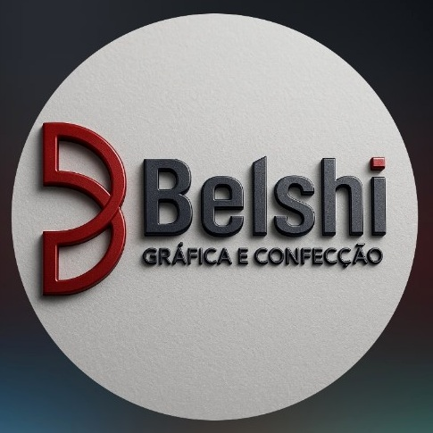

01
Casamentos
Histórias completas, do silêncio à celebração.

BELSHIImagens com presença. Design com intenção. Memórias com assinatura.
Conheça a Belshi ↘Não registramos apenas o que aconteceu. Preservamos o que isso fez você sentir.
A Belshi nasce do encontro entre técnica, sensibilidade e direção artística. Cada ensaio, evento e identidade visual é pensado para permanecer relevante muito depois do momento passar.
Uma seleção conceitual para apresentar como o acervo real da Belshi poderá ocupar o site.
Histórias completas, do silêncio à celebração.

Personalidade transformada em imagem.

O agora transformado em herança afetiva.

Imagem também é posicionamento.
Esta área foi desenhada para receber a cronologia oficial da Belshi, com fotografias antigas, marcos, mudanças de estúdio e histórias que só quem viveu pode contar.
A trajetória profissional de Esdras já ganhava forma. No site final, entraremos aqui com datas, imagens e relatos confirmados pela equipe.
A atuação de Esdras como fotógrafo já aparece em registros públicos da época, reforçando uma história construída ao longo de muitos anos.
Uma marca que une fotografia, direção criativa, atendimento e design para criar experiências completas.
Novas histórias, novos formatos e uma presença digital à altura da marca.
Por trás das lentes.
À frente de uma história.
Esta seção será a assinatura humana da Belshi. Aqui entra a história real de Esdras: como começou, o que aprendeu, como enxerga a fotografia e o que deseja deixar como legado através da marca.
“Uma frase verdadeira do Esdras sobre fotografia entrará aqui.”
Retratos verdadeiros da equipe substituirão estas imagens na versão final. Cada perfil poderá mostrar função, especialidade e uma apresentação pessoal.
184 fotografias · 27 selecionadas
Galerias privadas, seleção de favoritas, downloads autorizados e acompanhamento do trabalho — tudo dentro da identidade Belshi.
Canais oficiais integrados nesta apresentação conceitual.